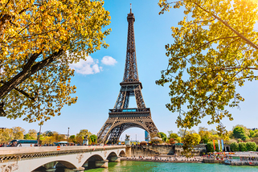

.jpg)
My favourite city

The city I would love to visit is Paris the most beautiful City in the world. It is known worldwide for the Louvre Museum, Notre-Dame cathedral, and the Eiffel tower. It has a reputation of being a romantic and cultural city.Also in Paris there are a lot of activities that I would like to do for instance visit the Eiffel tower, Bateaux Parisiens Seine River Gourmet Lunch & Sightseeing Cruise, and also visit the Louvre Museum.
Foreign Language
French is the foreign language I would love to learn, because I want to be able to communicate with people there in Paris and also it is the most beautiful language in the world. French is known as a romance language and the second most useful language in the world for business.
| English | French |
|---|---|
| Hello how is your day? | Bonjour comment est votre journée |
| Is the weather good that side? | est-ce qu'il fait beau de ce côté |
| Let's go shopping | allons faire du shopping |
Historical Places
Castle of Good Hope
.jpg)
The first stone was laid on 2 January 1666 and it was completed by April 1679. The materials used to build the Castle were local and included rock cut from the granite outcrop on Signal Hill, and blue slate and shells – transported from Robben Island. The Castle was built by soldiers, volunteers, slaves and Khoi undergoing punishment. The Castle acted as local headquarters for the South African Army in the Western Cape. The yellow paint on the walls was chosen to reduce the glare from the sunlight and also because it reflects the heat.
Parliament of RSA
.jpg)
It consists of four hundred members who are elected every five years using a party-list proportional representation system. Parliament consists of two Houses called the National Assembly and National Council of Provinces. Each House has its own distinct role and functions, as set out in the Constitution. Members of Parliament have freedom of speech, subject only to the rules of the Houses, when they participate in committees or debates. They have that right to ensure that they, as elected public representatives, can bring important matters to the attention of the Houses and the public.
City Hall
.jpg)
The Hall itself is made up of components from all over the world. The honey-coloured stone, which makes up its façade of limestone, was imported from Bath in England. The tower houses a clock and a number of bells, modelled on the famous Big Ben. The clock strikes the hours and chimes the Westminster quarters, which is a particular chime originating from St Mary’s Cathedral in England. Originally consisting of thirty-seven bells it was first rung on the 30th April 1925 when the Prince of Wales visited this country.